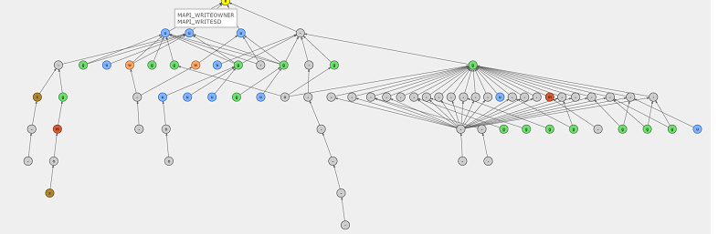

https://github.com/ANSSI-FR/AD-control-paths
Active Directory Control Paths auditing and graphing tools

Control paths in Active Directory are an aggregation of "control relations" between entities of the domain (users, computers, groups, GPO, containers, etc.) which can be visualized as graphs (such as above) and whose purpose is to answer questions like "Who can get 'Domain Admins' privileges ?" or "What resources can a user control ?" and even "Who can read the CEO's emails ?".